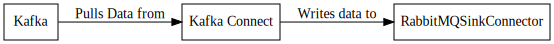

RabbitMQSinkConnector¶
Connector is used to read data from a Kafka topic and publish it on a RabbitMQ exchange and routing key pair.
Configuration¶
rabbitmq.host¶
Importance: High
Type: String
Default Value: localhost
The RabbitMQ host to connect to. See ConnectionFactory.setHost(java.lang.String)
rabbitmq.password¶
Importance: High
Type: String
Default Value: guest
The password to authenticate to RabbitMQ with. See ConnectionFactory.setPassword(java.lang.String)
rabbitmq.username¶
Importance: High
Type: String
Default Value: guest
The username to authenticate to RabbitMQ with. See ConnectionFactory.setUsername(java.lang.String)
rabbitmq.virtual.host¶
Importance: High
Type: String
Default Value: /
The virtual host to use when connecting to the broker. See ConnectionFactory.setVirtualHost(java.lang.String)
rabbitmq.port¶
Importance: Medium
Type: Int
Default Value: 5672
The RabbitMQ port to connect to. See ConnectionFactory.setPort(int)
rabbitmq.automatic.recovery.enabled¶
Importance: Low
Type: Boolean
Default Value: true
Enables or disables automatic connection recovery. See ConnectionFactory.setAutomaticRecoveryEnabled(boolean)
rabbitmq.connection.timeout.ms¶
Importance: Low
Type: Int
Default Value: 60000
Connection TCP establishment timeout in milliseconds. zero for infinite. See ConnectionFactory.setConnectionTimeout(int)
rabbitmq.handshake.timeout.ms¶
Importance: Low
Type: Int
Default Value: 10000
The AMQP0-9-1 protocol handshake timeout, in milliseconds. See ConnectionFactory.setHandshakeTimeout(int)
rabbitmq.requested.channel.max¶
Importance: Low
Type: Int
Default Value: 0
Initially requested maximum channel number. Zero for unlimited. See ConnectionFactory.setRequestedChannelMax(int)
rabbitmq.requested.frame.max¶
Importance: Low
Type: Int
Default Value: 0
Initially requested maximum frame size, in octets. Zero for unlimited. See ConnectionFactory.setRequestedFrameMax(int)
rabbitmq.requested.heartbeat.seconds¶
Importance: Low
Type: Int
Default Value: 60
Set the requested heartbeat timeout. Heartbeat frames will be sent at about 1/2 the timeout interval. If server heartbeat timeout is configured to a non-zero value, this method can only be used to lower the value; otherwise any value provided by the client will be used. See ConnectionFactory.setRequestedHeartbeat(int)
rabbitmq.shutdown.timeout.ms¶
Importance: Low
Type: Int
Default Value: 10000
Set the shutdown timeout. This is the amount of time that Consumer implementations have to continue working through deliveries (and other Consumer callbacks) after the connection has closed but before the ConsumerWorkService is torn down. If consumers exceed this timeout then any remaining queued deliveries (and other Consumer callbacks, including the Consumer’s handleShutdownSignal() invocation) will be lost. See ConnectionFactory.setShutdownTimeout(int)
rabbitmq.topology.recovery.enabled¶
Importance: Low
Type: Boolean
Default Value: true
Enables or disables topology recovery. See ConnectionFactory.setTopologyRecoveryEnabled(boolean)
Examples¶
Property based example¶
This configuration is used typically along with standalone mode.
name=RabbitMQSinkConnector1
connector.class=com.github.jcustenborder.kafka.connect.rabbitmq.RabbitMQSinkConnector
tasks.max=1
topics=< Required Configuration >
rabbitmq.exchange=< Required Configuration >
rabbitmq.routing.key=< Required Configuration >
topics=< Required Configuration >
Rest based example¶
This configuration is used typically along with distributed mode. Write the following json to connector.json, configure all of the required values, and use the command below to post the configuration to one the distributed connect worker(s). Check here for more information about the Kafka Connect REST Interface.
{
"config" : {
"name" : "RabbitMQSinkConnector1",
"connector.class" : "com.github.jcustenborder.kafka.connect.rabbitmq.RabbitMQSinkConnector",
"tasks.max" : "1",
"topics" : "< Required Configuration >",
"rabbitmq.exchange" : "< Required Configuration >",
"rabbitmq.routing.key" : "< Required Configuration >"
}
}
Use curl to post the configuration to one of the Kafka Connect Workers. Change http://localhost:8083/ the the endpoint of one of your Kafka Connect worker(s).
curl -s -X POST -H 'Content-Type: application/json' --data @connector.json http://localhost:8083/connectors
curl -s -X PUT -H 'Content-Type: application/json' --data @connector.json http://localhost:8083/connectors/RabbitMQSinkConnector1/config